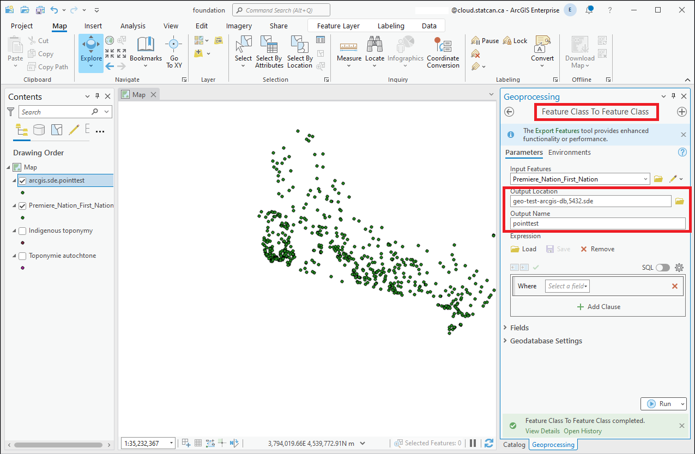
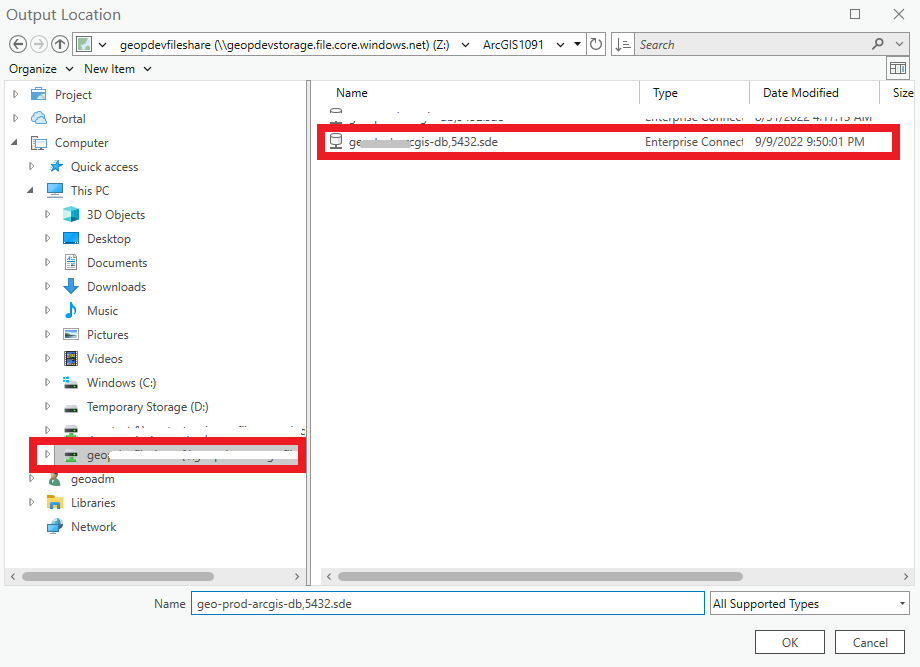

ArcGIS Pro on DAS GAE
Your ArcGIS Pro license
ArcGIS Pro licenses are managed by the StatCan GeoHelp team.
This is the same license that you use to access ArcGIS Pro on NetA-B/AVD and ArcGIS Online.
DAS can not provide you with a license.
Please contact GeoHelp for assistance: geohelp@statcan.gc.ca
Connect your ArcPro License (Internal STC user)
-
In the Settings Menu, select "Licensing" from the list on the left-hand side. It is normal for the license manager to take several minutes to initialize.
-
Click on the Configure your licensing options

-
In the License Type drop-down, select the Concurrent Use option.
-
In the License Manager field, enter the hostname: Stmcapp-200.statcan.ca

-
Click on the "Ok" button to save your changes.
-
Restart ArcGIS Pro to activate the new license settings.
Once you have connected to the concurrent license server, you should be able to see the Licenses for the ArcGIS Pro software and any extensions that are included.
Connect Pro to Enterprise Portal
A connection to the DAaaS GEO ArcGIS Enterprise Portal needs to be established in order to publish from ArcGIS Pro to the Portal. Follow these steps:
-
a: From the ArcGIS Pro home screen select Settings, then select Portals

OR
b: Within a project right-click your name at the top right of the window and select: Manage Portals

-
Select Add Portal and enter the following URL: https://geoanalytics.cloud.statcan.ca/portal/

-
The connection will then be listed. Select the more button '...', then select Sign in.
 We also suggest after the connection is completed you select the Set As Active Portal from the more... drop-down.
We also suggest after the connection is completed you select the Set As Active Portal from the more... drop-down. -
A browser window will open, click the 'Azure Cloud Login' login button and follow the prompts. Once Azure authentication is completed, you will be returned to the ArcGIS Pro screen.
Learn more about Self-Registering in the Portal
Learn more: Manage portal connections from ArcGIS Pro
Connect to a PostgreSQL Database
GAE has streamlined the ArcGIS Pro-PostgreSQL connection process by utilizing a .sde file connection.
-
In the Catalog pane, right-click Databases and select Add Database 
-
In the new window, expand This PC and located your project file share (mounted as a drive) 
-
Select the .sde file, and click Ok
-
The PostgreSQL database will not appear under Databases in the Catalog pane.
Learn More: ArcGIS Pro Documentation
Publishing to Enterprise Portal
As a member on GAE, you will have either a Project Member or Project Viewer user role. The same priviledges will carry across both ArcGIS Enterprise and ArcGIS Pro.
Importing data from ArcGIS Enterprise
Both users with the Project Member and Project Viewer roles will have the ability to consume (view) shared data from their project groups in ArcGIS Pro asd well as perosnal data.
In the Catalog pane (if the Catalog pane is closed, click the View tab on the main ribbon. In the Windows group, click Catalog Pane), select the Portal tab. The same Content tabs from ArcGIS Enterprise will appear; My Content, My Favorites, My Groups, My Organization, ArcGIS Enterprise, and Living Atlas.

Sharing data to ArcGIS Enterprise
Only users with the Project Member role will have the ability upload and share content to the Portal.
Right click on a layer in the Contents pane (if the Contents pane is closed, click the View tab on the main ribbon. In the Windows group, click Contents) and select Sharing > Share as Web Layer from the drop down menu. A new Share As Web Layer window will appear.

Best Practices
-
Organize your data: Create a logical folder structure and use descriptive names for your layers and datasets to make them easy to find and understand.
-
Limit the number of folders: Don't create too many levels of folders within your project, as this can make it difficult to navigate and locate items. Limit the number of levels to no more than three or four.
-
Use subfolders sparingly: Use subfolders only when necessary, such as when you have a large number of items or need to organize them by location or theme.
-
Separate working data from published data: Keep your working data separate from your published data. This can help prevent accidental modification or deletion of important data.
-
Use the project pane: Use the Project pane to manage your data, maps, and layouts. This makes it easy to switch between different parts of your project.
-
Use bookmarks: Use bookmarks to save specific views of your map. This makes it easy to return to a specific location and zoom level.
-
Use labeling wisely: Use labeling sparingly and make sure it is clear and easy to read. Consider using halo or background fills to make labels stand out.
-
Use symbology consistently: Use consistent symbology across your maps to make them easier to read and understand.
-
Document your work: Document your work using the metadata tools in ArcGIS Pro. This makes it easy to share your work with others and helps you keep track of changes over time.
-
Use map packages: Use map packages to share your maps and data with others. This ensures that all the necessary data and settings are included.
-
Use Geodatabases over shapefiles: Overall, geodatabases are a more robust and versatile data storage format than shapefiles.
-
Optimize your workflow: Optimize your workflow by using the tools and shortcuts available in ArcGIS Pro. This can save you time and help you work more efficiently.
-
Take advantage of resources: Take advantage of the ArcGIS Pro documentation, training, and user communities to learn more about best practices and to get help when you need it.